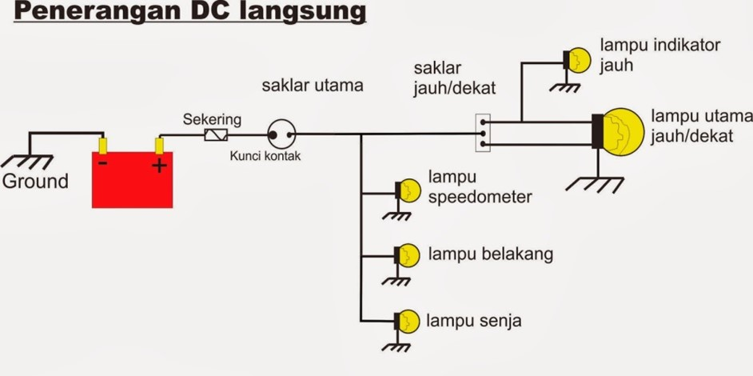
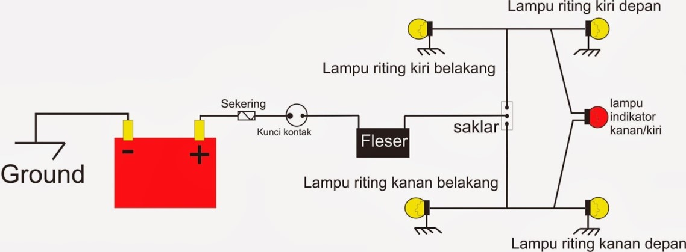
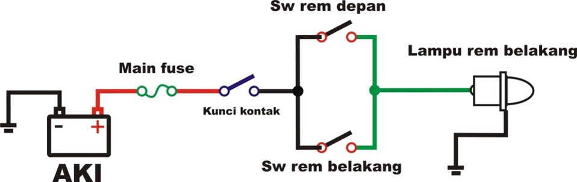

MATERI DAN SIMULASI
SISTEM PENERANGAN PADA SEPEDA MOTOR
A. Pengertian Sistem Penerangan Sepeda Motor
Sistem penerangan pada sepeda motor adalah rangkaian komponen kelistrikan yang dirancang untuk menyediakan pencahayaan dan sinyal bagi pengendara serta pengguna jalan lainnya. Fungsi utamanya adalah meningkatkan visibilitas dan keselamatan selama berkendara, terutama dalam kondisi cahaya rendah atau malam hari. Selain itu, sistem ini juga berperan sebagai alat komunikasi melalui isyarat lampu kepada pengguna jalan lain.
B. Jenis – Jenis Sistem Penerangan Sepeda Motor
1. Lampu Kepala/Besar (Headlight)
Fungsi lampu kepala adalah untuk menerangi bagian depan dari sepeda motor saat dijalankan pada malam hari.
adapun komponen-komponen lampu kepala antara lain;
- Aki
- Sekering
- Kunci Kontak
- Saklar Utama
- Saklar Jauh Dekat
- Lampu Utama
- Lampu Indikator jauh
Yuk, setelah memahami komponen dan rangkaian lampu kepala, saatnya mencoba simulasi! Klik tombol di bawah ini untuk memulai.
Mulai simulasi lampu kepala2. Sistem Lampu Sein
Fungsi lampu sein adalah untuk memberikan isyarat pada kendaraan yang ada di depan, belakang ataupun di sisinya bahwa sepeda motor tersebut akan berbelok ke kiri atau kanan atau pindah jalur.
Sistem tanda belok memiliki komponen utama, yaitu:
- Baterai/Aki
- Sekering
- Kunci Kontak
- Flasher
- Swtich
- Bohlam Sein
Yuk, setelah memahami komponen dan rangkaian lampu sein, saatnya mencoba simulasi! Klik tombol di bawah ini untuk memulai.
Mulai simulasi lampu sein3. Sistem Lampu Rem
Lampu belakang (tail light) berfungsi sebagai tanda keberadaan sepeda motor bagi kendaraan di belakangnya, terutama saat malam hari. Lampu ini menyala bersamaan dengan lampu kota di bagian depan. Sementara itu, lampu rem berfungsi sebagai isyarat pengereman agar kendaraan lain dapat mengantisipasi dan menghindari benturan.
Sistem lampu rem memiliki komponen utama, yaitu:
- Baterai/Aki
- Sekering
- Kunci Kontak
- Switch rem depan
- Swtich rem Belakang
- Bohlam rem
Yuk, setelah memahami komponen dan rangkaian lampu rem, saatnya mencoba simulasi! Klik tombol di bawah ini untuk memulai.
Mulai simulasi lampu remPenasaran bagaimana sistem penerangan bekerja di sepeda motor? Yuk, perdalam pengetahuanmu dengan membaca Modul Ajar Sistem Penerangan Sepeda Motor! Modul ini menyajikan penjelasan lengkap tentang komponen, cara kerja, pemasangan, hingga cara menguji dan memperbaiki sistem penerangan. Disertai juga dengan wiring diagram dan panduan penggunaan alat ukur. Klik tombol di bawah ini untuk mengunduh modulnya!